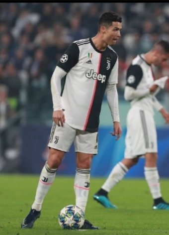

Middle Finger + On-Pitch Insulting Gestures
The Saudi middle-finger incident: In February 2024, after Al Nassr's 3-2 win over Al Shabab, with away fans chanting 'Messi', Ronaldo publicly made a controversial gesture — widely read as a middle finger or a crotch-grabbing provocation. The clip quickly blew up globally.
A one-match ban: The Saudi FA subsequently banned Ronaldo for one match and fined him for 'provoking fans'. But many pundits noted the punishment was conspicuously light; under Saudi sports law's strict standards a different player would likely have faced a heavier sanction.
Childish response to the 'Messi' spell: A five-time Ballon d'Or winner losing it on the spot at hearing his rival's name from opposition fans — that mental fragility sits wildly at odds with his 'GOAT' persona. A true king is not unhinged by a few terrace chants.
The insulting-gesture compilation: The middle finger is far from isolated. Across his career Ronaldo has repeatedly been caught making controversial gestures at fans, opponents and even referees — from the classic 'calma calma' to elbows, kicks and armband-tosses. On-pitch emotional management has long been a weak spot.
Double-standard protection: Tellingly, when other players do these things they are dragged through the press and hit with extended bans, while Ronaldo repeatedly enjoys relatively lenient treatment thanks to his superstar status. Fame as a get-out-of-jail card is itself a form of unfairness.
Emotional IQ as the missing grade: Technique and fitness can peak, but the shortfall in emotional intelligence leaves Ronaldo forever one step short on the 'perfect idol' track. A man who cannot control his middle finger can hardly fully control his own historical verdict.